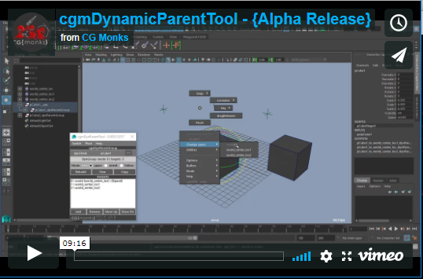
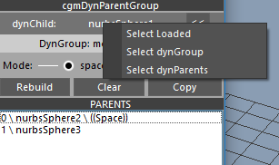
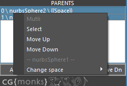

Dynamic Parent Tool¶
Status: Alpha release
Last Updated: August 2017
Overview¶
The dynamic parent tool is for setting up and managing dynamic parent setups for controls in rigs. Underlying tech was creating during Morpheus 2 development. Acknowlegments to our friend John Doublestein for the initial seed of how to do this.
Until we get embeded video sorted. Please use this link: https://player.vimeo.com/video/220053622
Features
- Attempting to make space switching more accessible
- Supports multiple modes: space,orient,follow
- Space Pivots for easy constrainable spaces
- Contextual marking menu for handy switching
Accessing¶
- UI
- Top cgm menu.
CGM> TD/Create> Rigging Utils> Dyn Parent Tool - TD Marking menu.
Utils(NW)>cgmDynParentTool(N) - Anim/Puppet Marking menus.
Utils(Bottom)>cgmDynParentTool
- Top cgm menu.
- Python
from cgm.core.tools import dynParentTool as cgmDynPrntTool
reload(cgmDynPrntTool)
cgmDynPrntTool.ui()
#or
cgm.core.tools.dynParentTool.ui()
Regardless of how you got there, you should see something like this:

Yours won't have anything loaded though. Let's dig in.
Terminology¶
- Dynamic Parent Group (dynParentGroup) - A metaclassed group setup from a dynamic child for switching that child
- Dynamic Child (dynChild/target) - The controlled object that is able to keep clean animation channels while following other spaces
- Dynamic Parent (dynParent) - A specified parent for a dynChild stored to a dynParentGroup to switch between.
- Mode (dynMode) - The mode the dynParentGroup is in. Currently supports:
- 0 - space - Most typically used option, target follows the space of the target
- 1 - orient - Target follows the orientation of the target
- 3 - follow - Target follows the position of one space and the orientation of another. Most useful for a head for example.
- Space Pivots(Pivots) - This is our solution for having easily constrainable spaces that change scene by scene.
- Alias - A string that displays for a given dynParent so that what displays in the attribute switcher and marking menu makes more sense. Instead of master_anim or whatever it can show
world. It works by a string attribute stored to a dynParent calledcgmAlias. This is used for more functionality to similar effect in our other systems as well.
Tip
The alias can be changed in referenced assets and when done via the gui will update the enum attributes accordingly.
UI¶
Menu¶
Switch¶

Contextual menu that builds a switcher based on item selection regardless of what is loaded to the ui.
- Depending on mode, the options in the switcher will change. For example, for follow mode you will get both
change orientToandchange followoptions with flyouts for each one. - If multiple objects are selected and they both have dynParentGroups, a multi switch will be an option as well to select shared options.
Note
The switch can be added to any of your own menus. See below: Adding to your own Menu
Pivot¶
Menu for adding/editing space pivots. Currently it only works off of loaded objects and not selection. For best use, your source control should be zeroed out.

- Add Single - Adds a single space pivot
- Add Multiple - Add as many pivots as you like from a provided prompt
- Clear - Clear all space pivots from the loaded object and rebuild the dynParentGroup
cgmDynParentGroup¶
The top section is divided into a couple of parts. Let's take a look one by one. Here's a basic ui window again.
DynChild¶
This section is for loading an object to the tool. With a given transform selected. Hit the << button to load it. The tool will populate with what it finds. If a dynParentGroup is detected it will load the rest of the ui with that information.
Popup
There is a left click pop up menu on any loaded object.
- Select Loaded - Select the loaded dynChild
- Select dynGroup - Select the dynGroup
- Select dynParents - Select the dynParents of the loaded dynChild
Report¶
The noninterative row report data found.
...- Nothing foundNo dynParentGroup detected- dynChild loaded, but hasn't been builtDynGroup: mode: 2 | targets: 3- dynGroup found. It's mode and the number of targets.
Mode¶
This lets you change the mode for the next rebuild of the dynParentGroup.
Tip
Your mode will not change until your build your dyn group again.
Buttons¶
Rebuild- If dynParentGroup exists, make one. If one exists, rebuild it (taking into account new mode for example).Clear- Clear all parts of a loaded dynParentGroup.Copy- Copy the current dynParentGroup to any selected objects.
Parents Scroll List¶
Here you will find a list of parents connected to the dynParentGroup. Let us look at the ui again.
Here is a line we'll break down: 0 \ cat(cat_jnt) \ ((Space))
0- The index of the dynParentcat(cat_jnt)- This is showing an alias. The Alias is shown first, the object is in the()((Space))- This designates that the this dynParent is the active dynSpace target for our dynParentGroup and dynChild
Popup¶
The scroll list items have right click menu and double click functionality.
- Doubleclick - This will select the parent in maya
- Right Click - Single parent selected
- Right Click - Multi parents selected
Single

Alias- Add or change the alias of a given parentClear Alias- Clear the alias attributeSelect- Select the parents in mayaSwitch-Move Up- Move selected up in the listMove Down- Move selected down in the list
Multi
Select- Select the parents in mayaMove Up- Move selected up in the listMove Down- Move selected down in the list
Buttons¶
These functions are somewhat contextual. They work both off of maya selection and dynParent list.
Add- Add selected as parentsRemove- Remove selected as parentsMove Up- Move selected up in the listMove Up- Move selected down in the list
Practical Uses¶
Referenced Assets¶
The easiest way to set things up is to add as many (and maybe a couple of more) space pivots in your base rig as you think you will need. In actuality you will probably never need more than 3 to which you can switch between in even complex scenes.
When animating in your referenced scene say you want to animate a hand along a staff and still want clean animation channels. In this case your dynParentGroup would be setup as a space setup more than likely.
- Select your control that has been setup with switching and has at least a single space pivot.
- Key your control on the frame before you want following enabled. This will key in your current space.
- Turn on the space pivot you want to use via the attribute on your control.
- Position the space pivot where you want your new space.
- Constrain that space pivot to the prop
- Use the ui or marking menu to change your current space to the space pivot you have been using.
- Your control will now track your prop from this point forward on the timeline.
Switching Setup¶
There are a couple of ways to handle switching. Through the ui but more practical is via the marking menu.
Currently the marking menu is setup in anim and puppet modes in the [cgmMarkingMenu](markingmenu.md). To do so. 1. Select any objects with a dynParentGroup setup. 2. Activate the marking menu. You'll see a contextual switcher and visible on load. Easiest just to try it out.